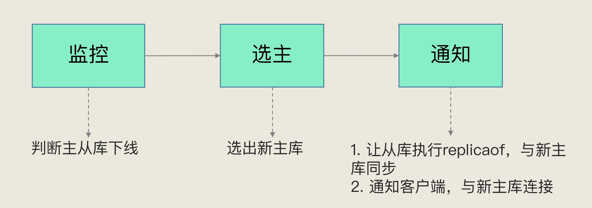
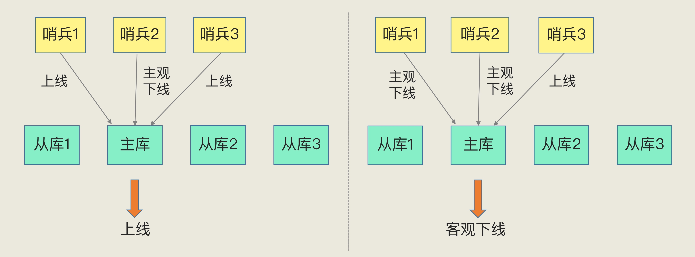
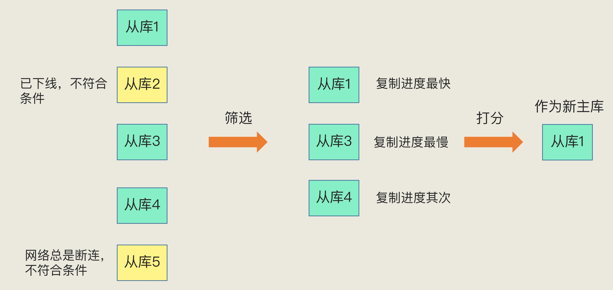

在 Redis 主从集群中，哨兵机制事项主从自动切换的关键机制，他解决了主从复制中的；判断主库是否宕机，如何选择从库，新从库如何通知从库和客户端
基本流程
Redis 哨兵本质是一个运行在特殊模式下的 Redis 进程，主从库运行时哨兵也在运行。哨兵主要有三个任务：监控，选主和通知

监控
在哨兵运行期间，周期性的给所有的主从库发送PING命令，检测她们是否正常运行，如果没有在规定的时间内收到返回的消息，则标记为下线
- 决策主库是否处于下线
选主
主库宕机之后，哨兵选择一个从库实例，把他作为新的主库
- 决策哪个从库实例作为主库
通知
哨兵让把新主库的消息发送给从库，并让从库执行replicof,与主库建立连接，并进行复制，同时，哨兵把新主库的连接通知信息通知给客户端。
主观下线和客观下线
主观下线：哨兵判断主、从对PING命令响应超时，哨兵标记为主观下线
- 误判：发生在集群网络压力大、网络拥塞、主库本身压力较大
客观下线：哨兵集群中多个实例判断主库下线，标记为客观下线
客观下线

客观下线判断标准 ： 当有N个哨兵实例时，最好有 N/2 + 1 个实例判断为主观下线，才能最终判断为下线
如何选主库
通过 筛选 + 打分 ，所有从库中按照一定的筛选条件，把不符合的条件的筛选，让后在筛选后的从库中按照一定的规则打分，最高的选为主库

筛选条件
- 所选从库任然在运行，判断它之前的网络连接状态，
- down-after-milliseconds * 10 ， down-after-milliseconds ：是我们认定主从库断连的最大连接超时时间；10 ：如果发生断连的次数超过了 10 次，就说明这个从库的网络状况不好，不适合作为新主库。
打分
从库优先级，从库复制进度，以及从库ID
- 优先级最高的从库得分高
- 用户可以通过 slave-priority 配置项，给不同的从库设置不同优先级
- 和旧主库同步程度最接近的从库得分高
- 从库的 slave_repl_offset 需要最接近 master_repl_offset
- ID小的从库得分高
- 在优先级和复制进度都相同的情况下，ID 号最小的从库得分最高，会被选为新主库